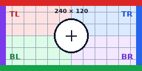

Raster source: 240 × 120. SVG source: 160 × 112. Amber shows the image element background.
Raster — fill

The center circle stretches with the element.
Raster — contain
The entire source fits; gaps show amber.
Raster — cover
The frame crops both horizontal source edges.
Raster — none
Intrinsic size: centered crop and vertical gaps.
Raster — scale-down, smaller frame
Shrinks when the frame is smaller than the source.
Raster — scale-down, larger frame
Keeps 240 × 120 with empty space on every side.
Cover — position 25% 75%
Percentages position the source in leftover space.
Contain — position 12px 8px
Fixed offsets from the top-left; right edge crops.
None — right 12px bottom 8px
Offsets from the right and bottom frame edges.
SVG — fill
The SVG viewport retains its own aspect rule.
SVG — contain
The entire vector illustration stays visible.
SVG — cover
The crop clips source content outside the frame.
Contain — border, padding, opacity
Purple padding and border; left/top; opacity 0.7.
Cover — rotated frame
8° rotation with 75% 35% position and padding.
Cover — rounded content
28px outer radius; 16px inner radius after border and padding.
None — uniform scale
1.1× natural size; right 7px bottom 9px offsets scale too.